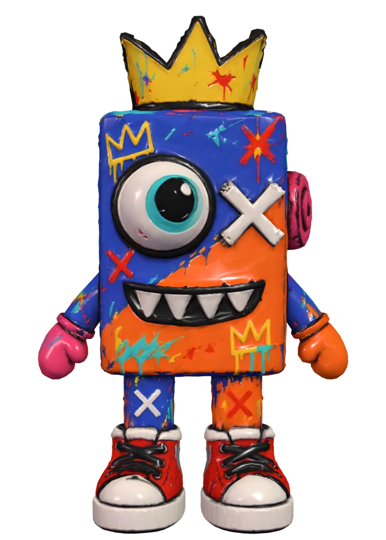
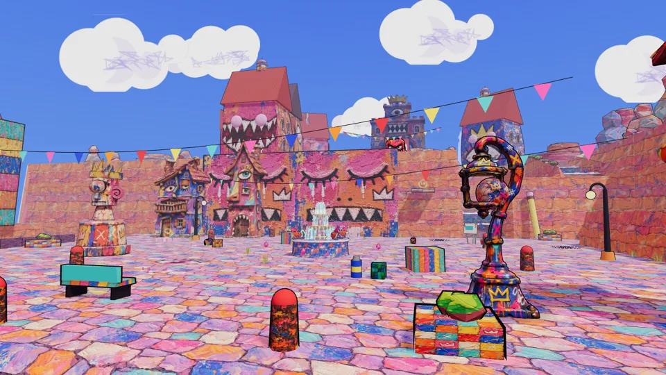
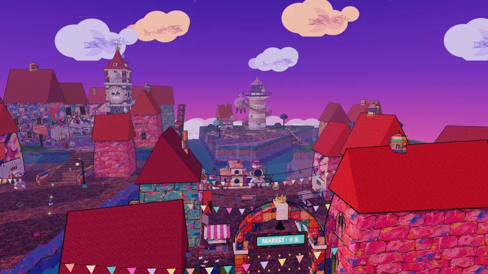
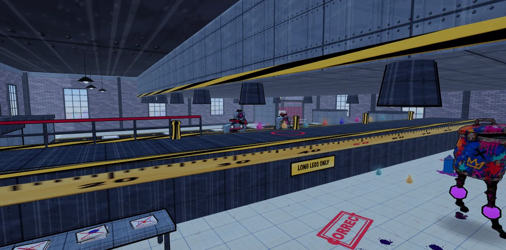
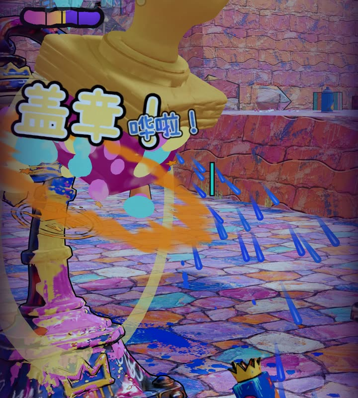
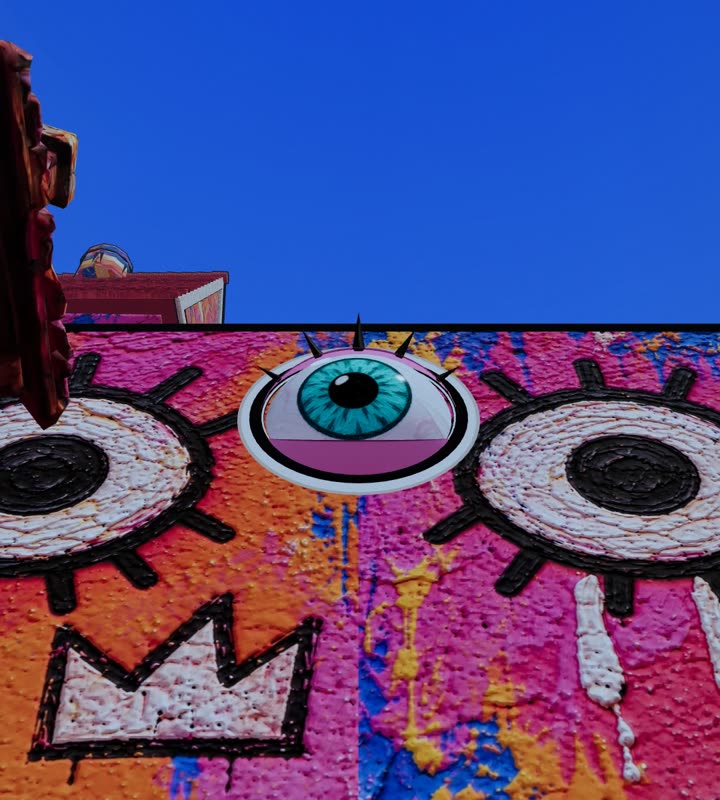
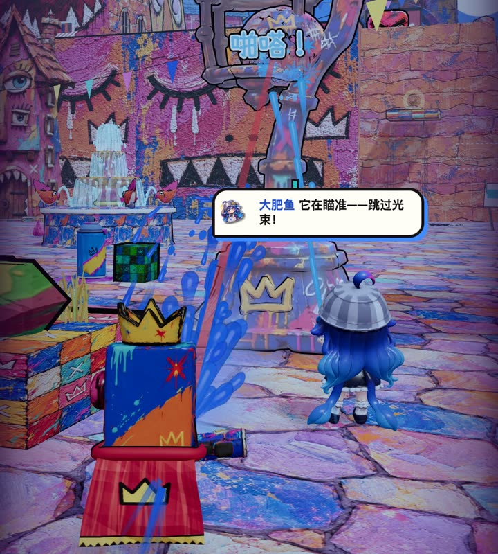
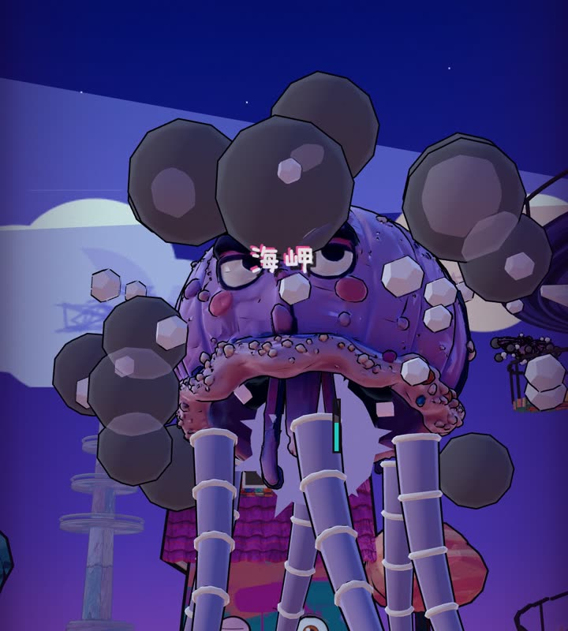

画歪了，才算赢。
一座被红笔打满叉的城。你是页边的小涂鸦 WAI：用喷漆把怪物涂回颜色，把眼睛、嘴巴、腿借给路灯、木箱和悬崖，让整座城醒过来。

01 — PLAY
电脑上用键盘鼠标，手机上有单独一套触屏按键。建议横屏。
02 — THREE LEVELS

城里的脸都闭着眼。把眼睛借给它们，一张一张叫醒。

这座城没了声音，所以你多了一招：喊。把大水母的灰罩子吼碎。

盖章机给什么都盖一个“正确”。最后那支红笔，不是打碎它，是把颜料借给它。
03 — HOW IT PLAYS

怪物不用打死。把它喷到发晃，冲上去盖个章，它就变回彩色的自己。有了黄金印章还能连着盖，奖励一倍一倍涨；贪心盖歪了，等于白干。

眼睛、嘴巴、腿都是贴纸。戴上眼睛，没画完的铅笔台阶变成真的；借给睡着的悬崖，它一睁眼，被擦掉的路就重新画出来。把腿借给木箱，它像小狗一样跟着你。

暂停菜单里把 AI 搭档打开，来的是一条头顶铁饭碗的大肥鱼。她自带一个不联网的小脑子；填上你自己的 DeepSeek 密钥，她还能聊天、听指挥。密钥只存在你自己的浏览器里。

每一招都先亮预兆，躲开了就有破绽。装备自己搭：四种喷嘴、四种道具、八个护符；画风有四种，还能自己调色。
04 — SOURCE
这个游戏的代码全部是 AI 写的（Claude Code 和 Codex），三视图用 AI 画，模型用 Tripo 生成；我负责设计、导演和把关。怎么搭出来的都在仓库里，许可条款也在。如果能帮到你，我会非常高兴。